{kind=link}
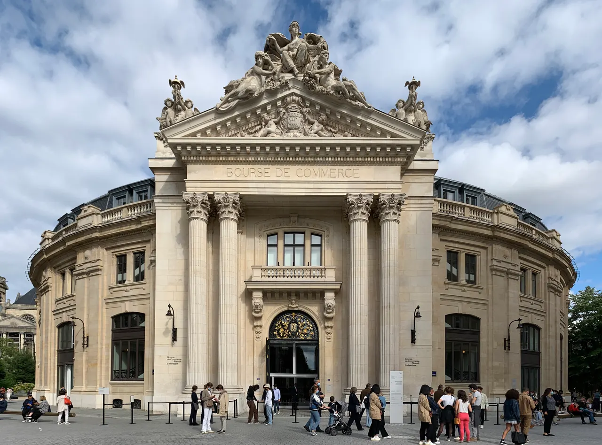
Bourse de Commerce — Pinault Collection
18세기 원형 곡물거래소를 세계적인 건축가 안도 다다오가 노출 콘크리트 원통 실린더로 리노베이션한 현대미술관. 프랑수아 피노 회장의 세계적 현대미술 컬렉션과 1889년 돔 천장 무역 파노라마 프레스코화.
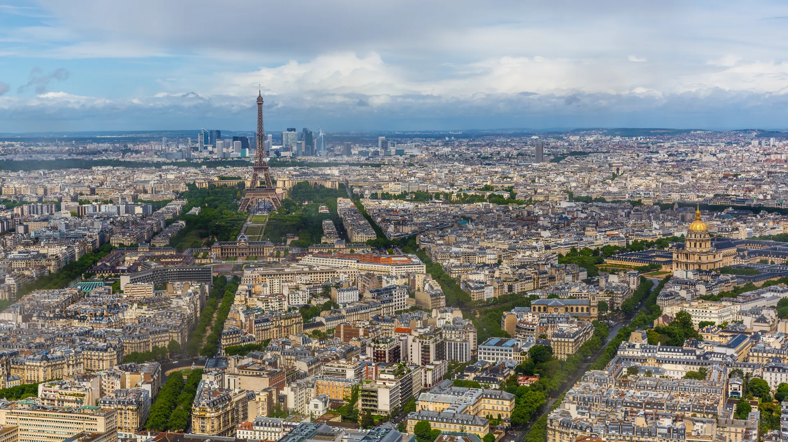
Paris에서는 명소를 하루 종일 따라다니기보다 한곳에 머물며 생활과 문화 일정을 함께 만든다. 오전에는 숙소에서 아침을 먹고 운동, 장보기와 housekeeping을 한 뒤 가볍게 점심을 먹고, 오후에는 미술관·박물관·동네·공연·행사 중 하나를 중심으로 밖에 나간다.
대형 미술관을 연속해서 배치하지 않고 문화 집중일 사이에 시장, 공원, 동네 산책을 섞는다. 저녁에 별도 행사가 있는 날은 오후 일정을 짧게 하고, 귀가 후에는 숙소나 15구 생활권에서 간단히 식사한다.
15박 전체를 관광으로 채우기보다 매일 일정에 생활시간과 휴식을 남기는 것이 기본이다.
| 날짜 | 핵심 일정 |
|---|---|
| 9/24 목 | Lyon → Paris TGV 이동 · 15구 숙소 체크인 (15박 시작) · 첫 장보기 & 동네 산책 |
| 9/25 금 | Tootbus 파리 시티투어 풀 루프 · Grand Palais |
| 9/26 토 | Musée du Luxembourg |
| 9/27 일 | Marché Convention 일요 장보기 · Musée de l'Orangerie (수련) · 튀일르리 · 팔레 루아얄 |
| 9/28 월 | Musée Gustave Moreau · 9구 누벨 아테네 · Paris Fashion Week 개막 & Le Marais |
| 9/29 화 | Musée d'Orsay 3.5시간 집중 관람 · Musée Rodin 조각 정원 · 앵발리드 외관 |
| 9/30 수 | Petit Palais (파리 시립미술관) · Paris Fashion Week 서부 축 & Palais de Tokyo |
| 10/1 목 | Château de Versailles (본관 10:00) · 대정원 · 트리아농 전일 투어 |
| 10/2 금 | Musée du Louvre 마스터피스 4시간 집중 관람 · Cour Carrée & 센 강변 일몰 산책 |
| 10/3 토 | Musée Marmottan Monet (<인상, 해돋이>) · 라늘라그 정원 & 파시 역사지구 산책 |
| 10/4 일 | Qatar Prix de l'Arc de Triomphe (파리롱샹 경마 대회 본선 전일) |
| 10/5 월 | 경마 후 오전 회복 & 세탁 · Musée Jacquemart-André · 몽소 공원 산책 |
| 10/6 화 | Marché Convention 장보기 · Musée d'Orsay |
| 10/7 수 | Bourse de Commerce ( |
| 10/8 목 | Musée Guimet · Musée d'Art Moderne de Paris (MAM) · 트로카데로 에펠탑 고별 일몰 |
| 10/9 금 | 15구 숙소 체크아웃 · Café du Commerce 점심 · 공식 택시로 CDG 이동 ➔ OZ502 탑승 |
상세 시각, 예약, 이동과 식사는 각 날짜의 Day 페이지에서 확인한다.

18세기 원형 곡물거래소를 세계적인 건축가 안도 다다오가 노출 콘크리트 원통 실린더로 리노베이션한 현대미술관. 프랑수아 피노 회장의 세계적 현대미술 컬렉션과 1889년 돔 천장 무역 파노라마 프레스코화.
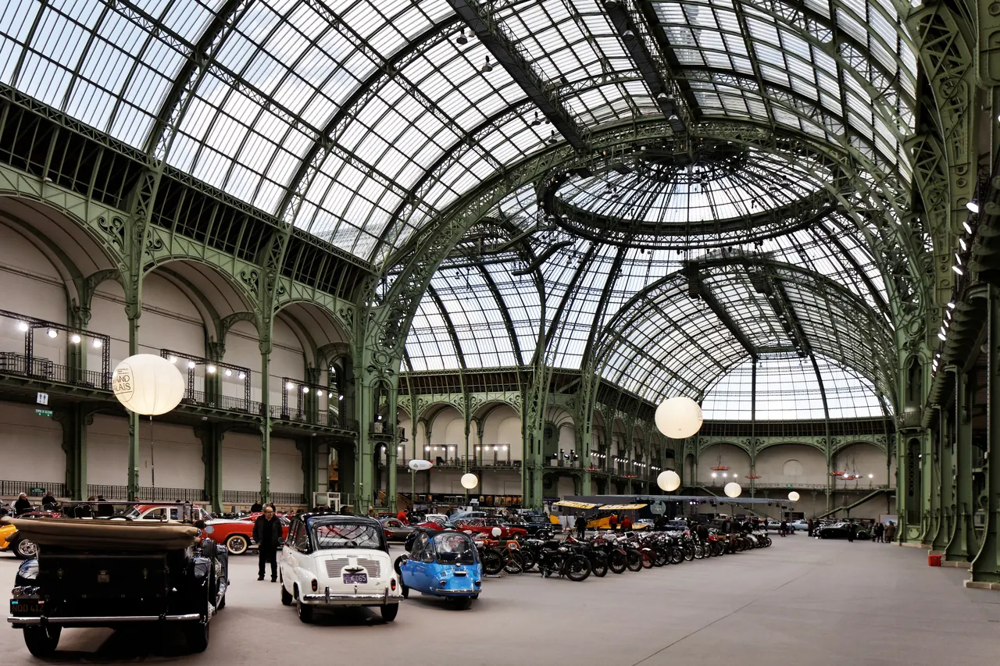
1900년 파리 만국박람회를 위해 건립된 45m 높이 아르누보 철골 유리 네이브(Nave)의 기념비적 국립 전시장. 2024 파리 올림픽을 거쳐 리노베이션 완료 후 재개관한 파리 문화 예술의 중심지.
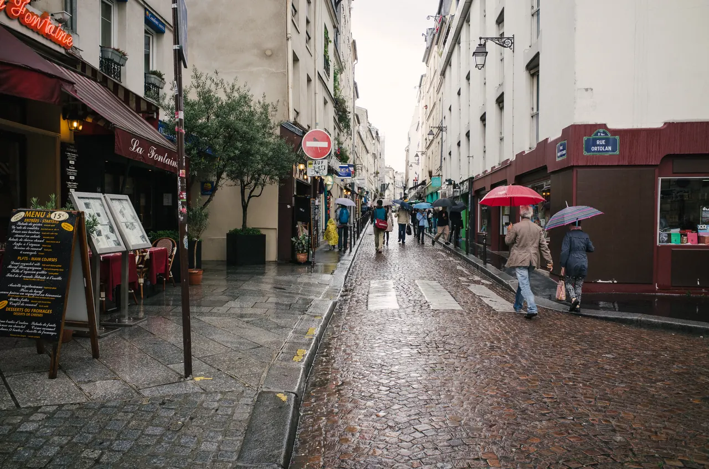
중세 소르본 대학 교수와 학생들이 공용어로 라틴어를 쓰던 데서 유래한 800년 파리 지성의 요람이자 센 강 좌안(Rive Gauche)의 심장. 프랑스 위인들의 성소 팡테옹(Panthéon), 셰익스피어 앤 컴퍼니, 뤽상부르 공원.
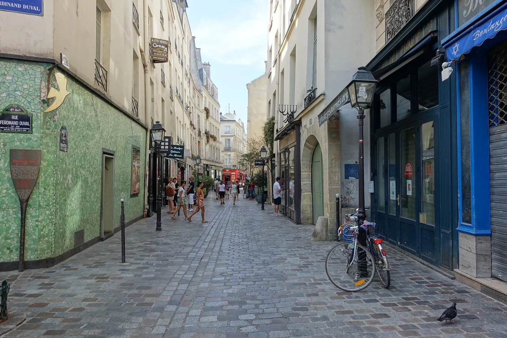
17세기 귀족 저택(Hôtel particulier), 파리에서 가장 오래된 대칭 광장 보주 광장(Place des Vosges), 유대인 전통 미식 로지에 거리, 북마레의 감각적인 독립 부티크와 갤러리가 공존하는 역사·트렌드 지구.
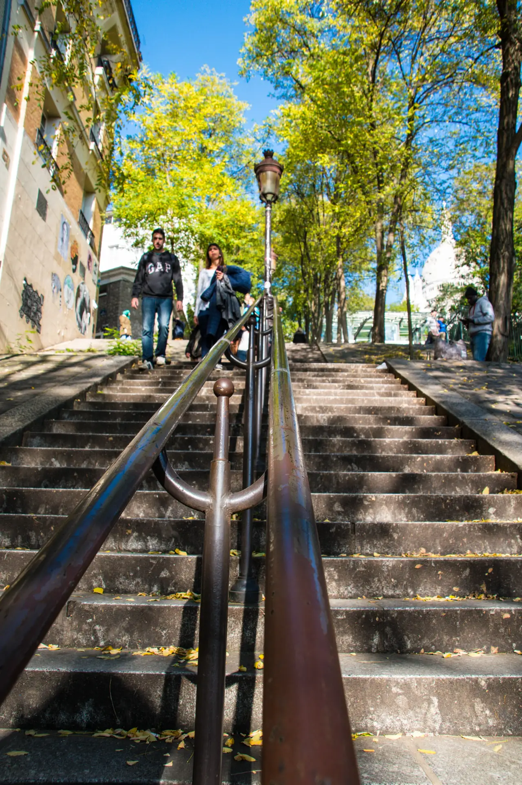
파리에서 가장 높은 해발 130m 석회암 언덕의 사크레쾨르 대성당, 피카소와 인상파 보헤미안들의 자갈 골목 및 유일한 포도밭(Clos Montmartre), 그리고 남쪽의 트렌디한 미식·부티크 거리 사우스 피갈(SoPi).
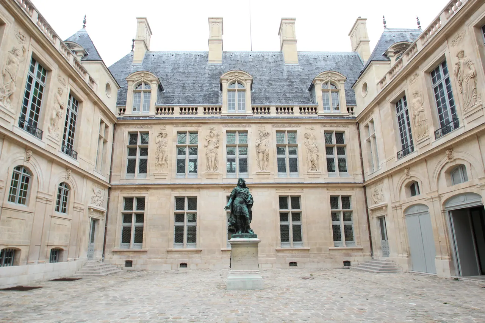
마레 지구 심장부 16세기 르네상스 저택에 자리한 파리 역사박물관. 선사시대 카누부터 프랑스 대혁명의 현장 유물, 프루스트의 방, 벨 에포크 상점 간판까지 파리라는 도시 자체의 파란만장한 역사를 생생하게 복원한 공간.
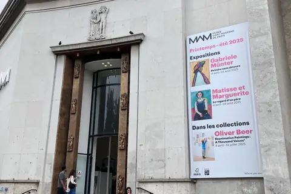
1937년 만국박람회 기념관 팔레 드 도쿄 동관에 위치한 파리 시립 현대미술관. 라울 뒤피의 세계 최대 벽화 <전기의 요정>, 마티스, 피카소, 들로네, 모딜리아니 등 20세기 모더니즘과 동시대 아방가르드의 정수.

1900년 오르세 기차역을 개조한 웅장한 보자르 건축물에 1848~1914년 인상주의와 후기 인상주의의 최고 걸작들이 집결한 미술관. 모네, 르누아르, 반 고흐, 드가, 로댕과 5층 대형 시계창 조망.
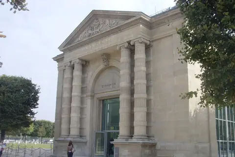
튈르리 정원 서쪽 옛 오렌지 온실을 개조한 미술관. 클로드 모네의 불후의 대작 『수련(Nymphéas)』 연작 8점이 타원형 2개 방에 자연 채광으로 완벽히 펼쳐진 몰입형 예술 공간과 장 발터-폴 기욤 컬렉션.

38만 점 소장품과 73,000㎡ 전시 면적을 자랑하는 세계 최대의 미술관이자 프랑스 왕궁. 이오 밍 페이의 유리 피라미드, 모나리자, 밀로의 비너스, 사모트라케의 니케를 품은 인류 예술의 보고.
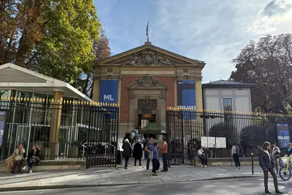
1750년 프랑스 최초로 대중에게 개방된 역사적인 뤽상부르 공원 내 미술관. 프랑스 상원(Sénat)이 관할하며, 앤디 워홀(Andy Warhol) 등 세계 최정상급 현대미술 및 모더니즘 기획 특별전을 전문으로 개최하는 품격 높은 공간.
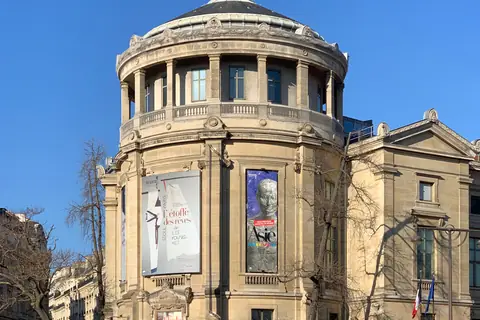
파리 16구 이에나 광장에 위치한 아시아 대륙 밖 최대 규모의 국립 아시아 예술 박물관. 앙코르와트 크메르 조각, 간다라 불상, 중국·한국·일본의 도자기와 불교 미술을 총망라한 동서 문명 교류의 보물창고.
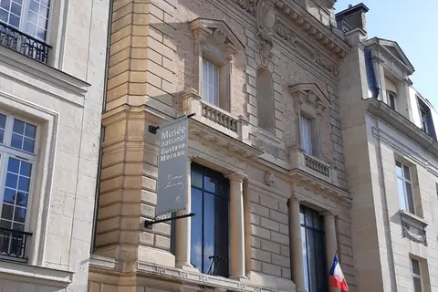
파리 9구 누벨 아테네 지구 귀스타브 모로의 생가이자 아틀리에. 19세기 프랑스 상징주의 회화의 거장이 직접 설계한 화려한 나선형 계단과 신화·성서의 신비주의 유화 및 수천 점의 데생이 가득한 숨은 보석.
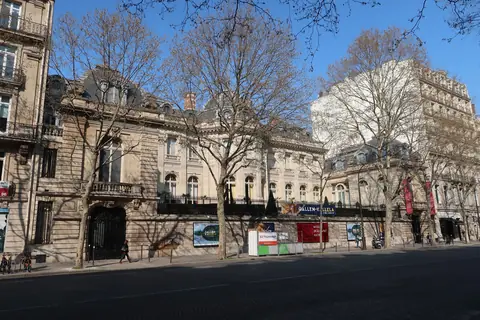
파리 8구 오스만 대로변 19세기 제2제정기 대부호 자크마르-앙드레 부부의 화려한 사저이자 개인 미술관. 보티첼리, 벨리니, 만테냐, 티에폴로 프레스코 등 이탈리아 르네상스와 프랑스 회화의 최고급 개인 컬렉션.
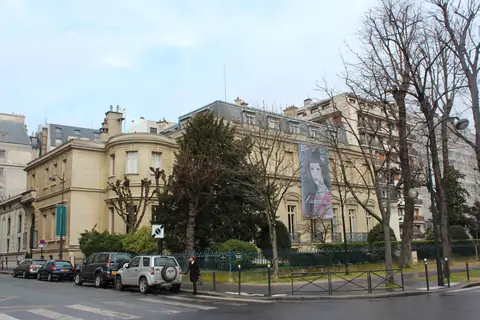
불로뉴 숲 인근 16구 저택에 위치한 세계 최대의 클로드 모네 원작 컬렉션 미술관. 인상주의 명칭의 기원이 된 『인상, 해돋이(1872)』와 모네 아들 미셸 모네가 기증한 후기 지베르니 수련 유화들.
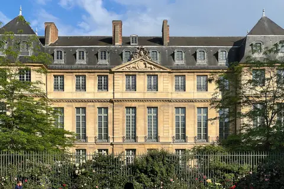
17세기 바로크 양식 귀족 저택 오텔 살레에 자리한 세계 최대 피카소 컬렉션. 청색 시대부터 입체주의, 조각, 도예, 말년 걸작까지 5,000여 점의 작품과 개인 소장품을 망라한 마레 지구의 대표 미술관.
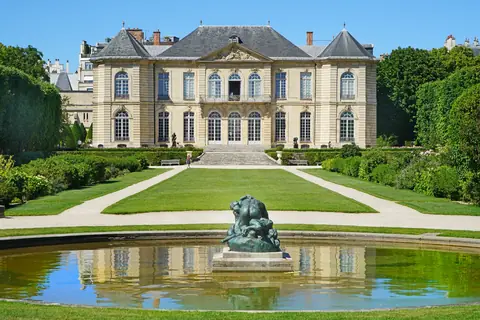
로댕이 말년에 아틀리에로 사용했던 18세기 로코코 양식 저택 오텔 비롱과 장미 정원에 펼쳐진 조각의 성지. <생각하는 사람>, <지옥의 문>, <키스> 등 근대 조각의 정수를 실내외에서 만나는 곳.

2019년 4월 화재 이후 5년간의 기적적인 복원을 거쳐 2024년 12월 재개관한 파리의 심장 시테 섬의 고딕 대성당. 1163년 초기 고딕의 정점, 복원된 96m 첨탑과 중세 스테인드글라스 3대 장미창.
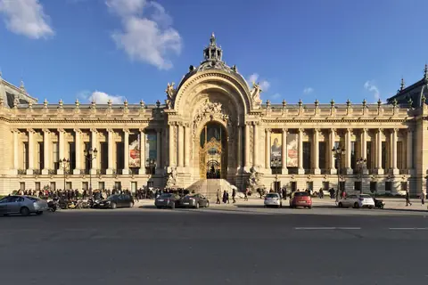
그랑 팔레 맞은편 1900년 만국박람회의 보자르 건축 보석이자 파리 시립미술관. 고대부터 20세기 초까지의 회화/조각 상설전(무료)과 모자이크 바닥, 야자수가 자라는 안뜰 정원 카페가 매력적인 공간.

태양왕 루이 14세가 절대왕정의 영광을 과시하기 위해 축조한 유럽 바로크 궁전의 절대적 정점(유네스코 세계유산). 357개 거울이 빛나는 '거울의 방(Galerie des Glaces)', 800ha 프랑스식 대정원, 마리 앙투아네트의 촌락.

1868년 앙리 라브루스트가 주철 기둥과 9개 도자기 돔으로 완성한 19세기 건축의 걸작 '라브루스트 열람실'과 일반에 전면 무료 개방된 거대한 타원형 '오발 열람실(Salle Ovale)', 프랑스 국립도서관 박물관.

렌조 피아노와 리처드 로저스가 건물 배관과 골격을 외벽으로 노출시킨 20세기 하이테크 건축의 전설이자 유럽 최대 근현대미술관. ⚠ 2025년 가을부터 2030년까지 전면 개보수 공사로 본관 폐관 중.

클로드 모네가 43년간 직접 꽃과 연못을 가꾸며 불후의 『수련』 대작을 창조해낸 살아있는 인상파 캔버스. 초록색 일본식 다리가 걸린 '물의 정원(Jardin d'eau)'과 핑크빛 모네 생가 아틀리에.

파리의 옛 중앙 식료품 시장 '레 알(Les Halles)'의 전통을 잇는 활기찬 조약돌 보행자 미식 거리. 1730년 개업한 파리 최고(最古)의 제과점 스토레(Stohrer), 유서 깊은 치즈·샤퀴테리 상점과 야외 카페 테라스.
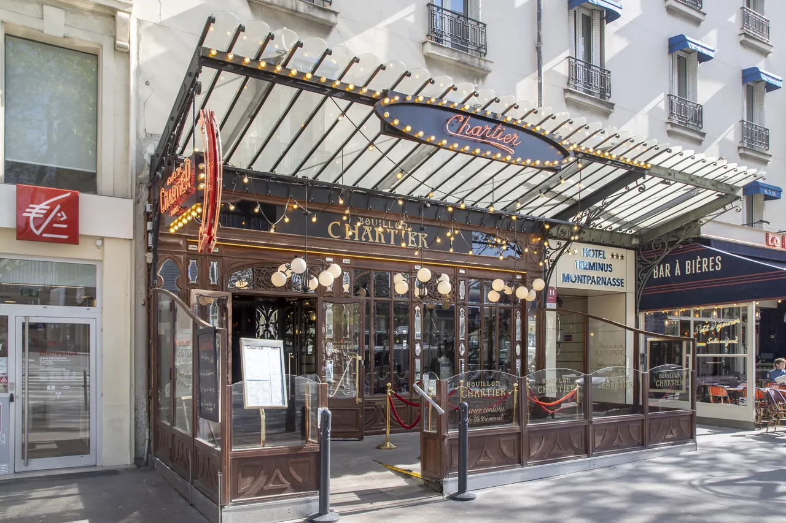
1903년 건립된 파리 프랑스 정부 공인 역사기념물(Monument Historique) 아르누보 식당. 전설적인 가성비 부이용.
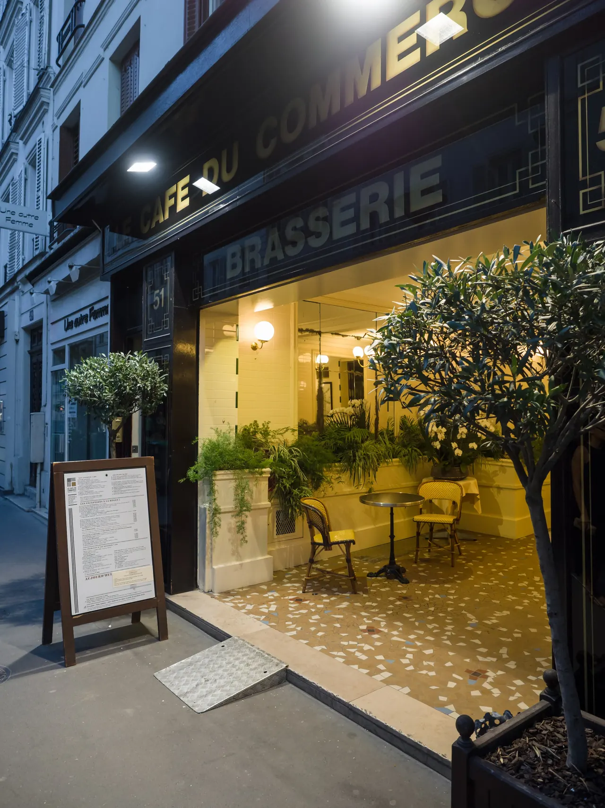
1921년 15구 상업거리에 문을 연 역사적인 3층 아르데코 보이드 가든 브라세리. 오리 콩피, 스테이크 프릿, 정통 에스카르고.
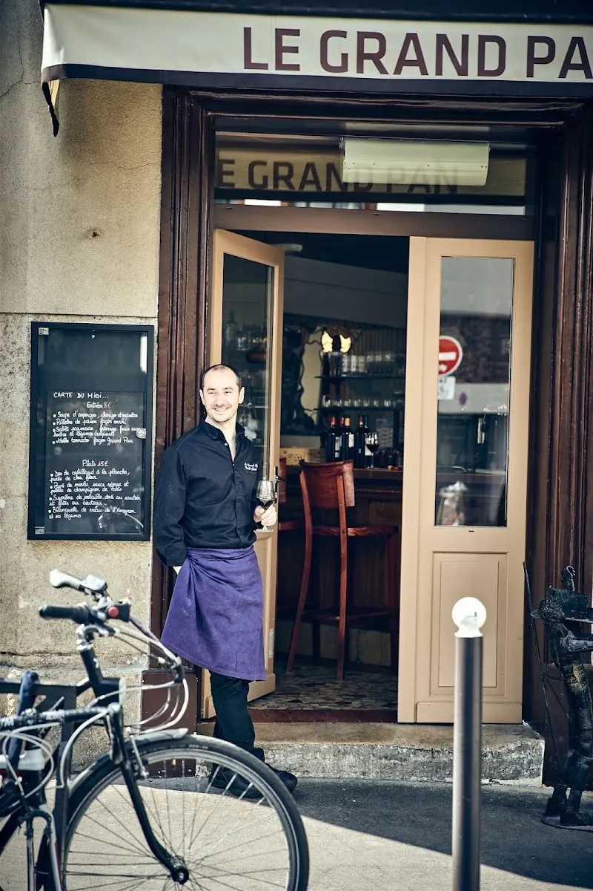
파리 15구 비스트로노미(Bistronomie)의 자존심. 셰프 브누아 고티에가 숯불로 구워내는 최상급 육류와 바스크풍 제철 미식 요리.
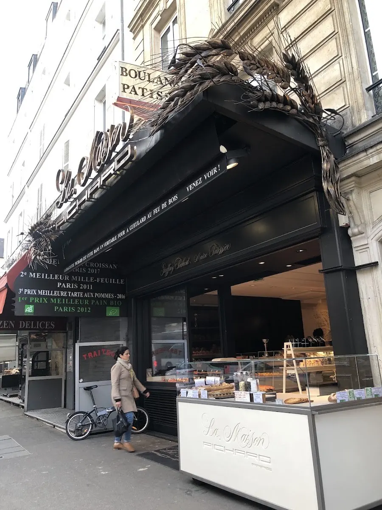
파리 최고의 바게트 그랑프리(Grand Prix de la Baguette) 수상에 빛나는 15구 대표 아티장 베이커리. 천연 발효 바게트 트라디시옹과 갓 구운 크루아상.

15구 콩방시옹 대로를 따라 화·목·일 열리는 파리 서남부 최대 규모의 활기찬 정통 노천 생활시장. 제철 과일, 아티장 치즈, 로티세리 치킨의 보고.
15구 체류의 장점은 파리 시민들의 일상 식문화를 가까이서 누릴 수 있다는 점이다. 아침에는 동네 아티장 베이커리에서 갓 구운 바게트 트라디시옹과 크루아상을 사고, 저녁에는 숙소 간이주방에서 시장 식재료로 식사를 준비하거나 로컬 비스트로를 찾는다.
파리 체류 중에는 Marché Convention(15구) 외에도 일정 동선에 맞춰 로컬 시장을 경험한다. 시장에서는 즉석에서 먹을 퀴슈, 파테 앙 크루트, 구운 닭고기, 제철 무화과와 포도, 샐러드용 샤퀴테리와 콩테 치즈를 구입한다.
아침은 숙소 인근 빵집(Boulangerie Pichard)과 주방을 활용하고, 점심은 미술관 인근 비스트로나 시장에서 가볍게 한다. 저녁은 15구 숙소식과 생활권 식당을 중심으로 피로를 관리한다.
15박 확정 숙소는 15구 78 Rue de Lourmel이다. 9월 24일 Gare de Lyon 도착과 10월 9일 CDG 출국은 큰 짐 때문에 택시로 고정하고, 체류 중에는 각자 휴대전화 또는 Navigo 매체로 이동한다.
Paris 체류의 거점은 15구(78 Rue de Lourmel)다. 체류 전반에 걸쳐 숙소 아침, 인근 빵집(Boulangerie Pichard 등), 장보기(Marché Convention 등), 운동·산책과 housekeeping을 반복하는 생활 루틴을 유지한다.
숙소 주변의 빵집, 슈퍼마켓과 노천시장은 반복해서 이용하는 생활 인프라로 본다. 저녁 행사가 없는 날에는 관광지에서 계속 머무르기보다 15구로 돌아와 숙소식이나 동네 비스트로로 하루를 마친다.
대형 문화일이나 근교 일정 다음 날에는 오전 시간을 길게 비우고 오후 일정도 한 곳만 잡는다.
아침에는 15구 숙소 주변(센 강변, 샹드마르스, 시뉴 섬 방향)에서 가볍게 걷거나 뛰고, 근교일이나 대형 미술관 일정이 있는 날에는 별도 운동을 줄인다.
늦은 귀가 — 야간에는 환승 수가 적고 밝은 출구로 연결되는 경로를 우선한다. 행사·경마 귀환 때 혼잡하면 다음 열차를 기다리고 휴대전화는 출입문 근처에서 꺼내지 않는다.
Day 27 Paris Gare de Lyon 도착 뒤 큰 짐을 들고 Metro로 환승하지 않고 택시로 15구 숙소에 간다. 생활권 확인만 하고 개별 교통권은 다음 날 첫 이동에서 시작한다.
9.24(목) · Day 27 · ParisDay 42에는 14:00 이전 공식 택시로 15구 숙소에서 CDG Terminal 1으로 출발한다. Paris Region Airports Ticket은 철도 비상안일 뿐 확정 동선이 아니다.
10.9(금) · Day 42 · Paris9/24–27·10/5–8 시내·Versailles 이동; 공항역 진출입만 제외
이번 일정에서는 쓰지 않는다. 개별권 기간에 계획이 바뀌어 bus·tram만 타는 여정이 생길 때만 구매
9/28–10/4 한 주만; Day 34 Versailles RER C 포함
이번 CDG 확정 택시의 철도 비상안; 미리 사지 않음
파리 도심에서는 메트로와 도보로 이동한다. 15구 숙소에서는 메트로 8호선(Lourmel, Commerce)과 10호선(Avenue Émile Zola), 6호선(La Motte-Picquet - Grenelle)을 이용해 좌안과 우안의 주요 문화 지구로 직통 또는 1회 환승으로 연결된다.
오후 외출 시에는 숙소에서 목적지까지 메트로로 이동한 뒤, 인근 역사 지구와 미술관 사이는 도보로 연결한다. 저녁 일정이 끝나면 메트로로 15구 생활권으로 복귀한다.
15박 체류 중 대중교통 이용은 체류 주간에 맞춰 운영한다. 9/24–9/27(도착 주말)과 10/5–10/8(마지막 주)은 1인 1여정 티켓(스마트폰 충전)을 사용하고, 중간 집중 이동 주간인 9/28–10/4 Weekly 한 번만 Navigo Semaine(Weekly all zones, 고정된 월요일–일요일 유효)을 활용한다.
베르사유(Day 34)는 RER C선을 이용해 이동하며, 15구 숙소 인근 역(Javel 등)에서 직통으로 연결된다.
출국일(10/9)에는 큰 짐이 있으므로 14:00 이전 숙소 앞에서 공식 택시(Paris Aéroport 택시 정액제)를 이용해 CDG Terminal 1으로 이동한다. 국제선 탑승 3시간 전 도착하여 여유 있게 출국 수속과 OZ502 탑승을 준비한다.
9/24–10/8 시내 Metro 환승과 Day 34 RER C 방향을 확인한다. Day 42 CDG는 공식 택시가 정본이며, 공항·RER 운행은 이 지도만으로 판단하지 않는다.